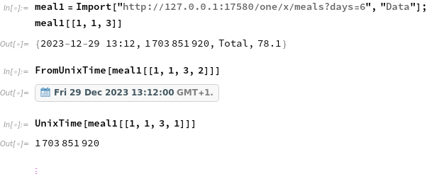

Juggluco contains a web server. You can turn it on with Left menu->Settings->Exchange data->Web server. Via the web server other programs can make use of the data in Juggluco. In the following 127.0.0.1 is used for the hostname or IP of the web server. In this way you can try out the commands by opening this web page on the same phone where Juggluco is running. If you unset "Local only" in Left menu->Settings -> Exchange data -> Web server, you can also use it from other hosts on your home network by replacing 127.0.0.1 with the IP of the phone. If Use SSL is set, you can replace http://127.0.0.1:17580 with https://ahostname:aport. Whereby "ahostname" is the hostname associated with the SSL certificate and "aport" is the port that your modem redirects to "SSL Port" (set in left menu->Settings->Exchange data->Web server) of your phone.
You can also use this page when using something different from "http://127.0.0.1:17580": If you add ?urlstart=aurl http://127.0.0.1:17580 in all these examples is replaced with aurl. For example you can use https://www.juggluco.nl/Juggluco/webserver.html?urlstart=http://192.168.1.69:17580 in which case http://127.0.0.1:17580 is replaced with http://192.168.1.69:17580. (It works only when you click on a link, not when you open a link in a different tab or window). You can also append the api_secret, for example: https://www.juggluco.nl/Juggluco/webserver.html?urlstart=http://192.168.1.74:17580/somethingsecret whereby somethingsecret is the api_secret.
Instead of Juggluco on a phone, you can also use Juggluco server. Android or WearOS apps can, instead of making use of the web server, also receive a broadcast every time a new glucose value is received from the sensor.
JavaScript web viewer that displays the data received from Juggluco server.
Juggluco server can also create some graphics itself:
http://127.0.0.1:17580/x/curve
This contains a part of the glucose curve in Juggluco. See the options below for changing the display options. When nothing is specified stream, scans and amounts are displayed.
http://127.0.0.1:17580/x/stats
Displays the same image you also see under left middle menu→Statistics. See options.
With newer versions of Juggling server you can also receive these statistical information in a json, and it can be displayed via JavaScript instead of an image: http://127.0.0.1:17580/x/statistics
http://127.0.0.1:17580/x/summarygraph
Displays the summary graph of left middle menu→Statistics. It can take some time before it is displayed. See options.
http://127.0.0.1:17580/x/report
An overview of the glucose values of a specified number of days (default 20). It contains the statistics, the summary graph and the curve of individual days. Something similar to the AGP Report healthcare professionals use to get a quick picture of diabetic management of a patient.
Exactly the same data as can be exported in Juggluco with Left middle menu->Export, can also be assessed via the web interface:
Stream |
http://127.0.0.1:17580/x/stream In Juggluco 10.9.9 and later: Live stream |
Scans |
|
History |
|
Amounts |
|
Meals |
After one of the above commands you can place '?' followed by a list of the following options separated by '&".
Option |
Meaning |
Example |
Place a header with the meaning of each column above the columns. |
||
mg/dL |
Give glucose in mg/dL The default unit is dependent on the unit settings of Juggluco or Juggluco server. |
|
mmol/L |
Give glucose in mmol/L |
|
Specify for how many days data should be returned. |
||
The duration of data in seconds. Multiple days and duration specifications are added. When the total duration is zero, it defaults to 5 hours. |
||
Start time in Unix time (seconds since 00:00 1 January 1970 GMT). If it starts with - , the following number is subtracted from the current time. |
http://127.0.0.1:17580/x/amounts?starttime=1698266963 http://127.0.0.1:17580/x/curve?stream&scans&darkmode&width=800&starttime=-9300 |
|
End time in Unix time (seconds since 00:00 1 January 1970 GMT). If it starts with - , the following number is subtracted from the current time, if it starts with + the following number is added to the current time. |
||
Other way to specify the start time for testing purposes. The time is in local time (Nightscout uses GMT). |
http://127.0.0.1:17580/x/scans?header&start=2023-02-23T8:43:00&days=8 |
|
Specify end time. |
||
Give also calibrated values when applied to stream, scans or history. |
||
Give also calibrated stream values when applied to curve. When applied to report, stats or summarygraph, it gives the statistics for calibrated stream values. |
||
Give also calibrated history values when applied to curve. When applied to report, stats or summarygraph, it gives the statistics for calibrated history values. |
||
Give also calibrated scan values when applied to curve. |
||
When applied to curve, stats or summarygraph in combination with calibrated(history/stream/scans), it specifies that the raw value should be used when no calibrated value exists. When not specified, the value is not used when no calibrated value exists. |
||
Truncates output to the specified number of items. Added to report, it gives the maximal count of days to display in a separate curve. |
||
The Nightscout token used for Nightscout commands, can also be used for the Juggluco's export commands. In other Nightscout servers, Nightscout token is different from api_secret, but in the Nightscout server in Juggluco they are the same. api_secret and api-secret also work with all commands that use the web server in Juggluco. They are http header elements. api_secret is plain text, api-secret is SHA1 encoded. Examples: api_secret: xyx api-secret: 3c4bc8e59079403cb17a03a19c889769faadfdc8 You can also add the api_secret after the hostname and port. This has the advantage that you can also add an api_secret to apps that themselves don’t have the possibility to supply an api_secret or token. This is meant to be used with Nightscout clients. So you can give as Nightscout Follow URL http://127.0.0.1:17580/xyz instead of http://127.0.0.1:17580 when xyz is the api_secret. |
||
darkmode |
Display graphs on a black background. |
|
stream |
Give stream values in curve or report |
|
history |
Give history values in curve or report |
|
scans |
Give scan values in curve or report |
|
amounts |
Includes entered numbers (amounts) in curve or report |
|
meals |
Display also meals in curve or graph |
|
hl= |
Specify the language to display curve, stats, summarygraph or report. Possible values are all the languages Juggluco knows: ar, be, de, en, es, fr, hi, it, ja, nl, pl, pt, ru, sv, tr, uk, uz and zh |
|
width= |
Used by curve, stats and summarygraph. Give width of curve. |
|
height= |
Used by curve, stats and summarygraph. Give height of curve. |
|
glow= |
Gives lowest value of the graph range, as in left menu→Settings→Display. Only applies when all values in view are below this value. |
http://127.0.0.1:17580/x/curve?width=600&height=270&mmol/L&glow=3.9 |
ghigh |
Gives highest value of the graph range. Only applies when all values in view are below this value. |
|
Only used for libreview. When multiple sensors are used at the same time only data from first sensor is returned. When not set, all data is returned. |
The data contains the following columns:
Column header |
Meaning |
Used with: |
Sensorid |
Sensor identifier |
Sensor only |
Nr |
Number starting with 1 for the first data item of a particular sensor or data source and incremented with each new item. |
both |
UnixTime |
Time in number of seconds since 00:00 1 January 1970 GMT |
both |
YYYY-mm-dd-HH:MM:SS |
Local time split into its component parts. mm= month, MM= Minute. |
both |
TZ |
Time zone in number of hours from GMT |
both |
Min |
Number of minutes since the start of the sensor. |
sensor only |
mmol/L or mg/dL |
Glucose value. If the url doesn't contain mmol/L or mg/dL, is the unit dependent on the unit setting of Juggluco. |
sensor only |
Rate |
Rate of change. |
sensor only |
ChangeLabel |
Label for rate of change |
sensor only |
Source |
0 for Amounts entered in Juggluco, 1 for Kerfstok. |
amounts only |
Value |
Value of amount |
amounts only |
Label |
Label for amount |
amounts only |
The meaning of rate of change:
Rate: |
Label: |
Arrow in Abbott app: |
<=-2 |
FALLING_QUICKLY |
↓ |
Between -2 and -1 |
FALLING |
↘ |
-1 to 1 |
STABLE |
→ |
1 to 2 |
RISING |
↗ |
>=2 |
RISING_QUICKLY |
↑ |
nan |
NOT_DETERMINED |
|
Meals can easily be imported into R, Python and Mathematica. The footer of each meal contains also the unix time (seconds since 1 january 1970 00:00 GMT) after the date in local time.
library(rvest) library(xml2) meal1=html_table(read_html("http://127.0.0.1:17580/x/meals?days=6"),header=TRUE) tail(meal1[[1]]$Ingredient,n=1) [1] "2023-12-29 13:12" > tail(meal1[[1]]$Quantity,n=1) [1] 1703851920 > as.POSIXct(tail(meal1[[1]]$Quantity,n=1), origin="1970-01-01") [1] "2023-12-29 13:12:00 CET"
import pandas as pd from datetime import datetime meal1=pd.read_html("http://127.0.0.1:17580/x/meals?days=6") print(datetime.fromtimestamp(meal1[0]['Quantity'].iloc[-1])) print(meal1[0]['Ingredient'].iloc[-1]) 2023-12-29 13:12:00 2023-12-29 13:12

For Julia, C and C++ I couldn’t find a library that easily gets this data out of a html table.
To save data in the same format as Libreview, use the following command:
http://127.0.0.1:17580/x/libreview?header&days=14
You can add some of the options described in the options table: header, days, duration, start, starttime, end, endtime, mmol/L, mg/dL and token.
As special option there is: exclusive.
(For information on how to configure Juggluco server to receive data from Android Juggluco, see https://www.juggluco.nl/Juggluco/cmdline).
To save entered insulin, carbohydrates or comments, you need to assign labels to these categories.
For example ./juggluco -l shows the following labels:
Libreview:
0: Novorapid |
Not set |
1: Carbohydra |
Not set |
2: Dextro |
Not set |
3: Levemir |
Not set |
4: Bike |
Not set |
5: Walk |
Not set |
6: Blood |
Not set |
Now you can assign these labels to categories with:
./juggluco -V -0R -1C -2C -3L -4O -5O -6O
-0 stands for label 0, -1 for label 1, etc
R: Rapid acting Insulin
L: long acting Insulin
C: Carbohydrate
O: cOmment
Now ./juggluco -l returns:
Libreview:
0: Novorapid |
Rapid acting insulin |
1: Carbohydra |
Carbohydrate |
2: Dextro |
Carbohydrate |
3: Levemir |
Long acting insulin |
4: Bike |
Comments |
5: Walk |
Comments |
6: Blood |
Comments |
See ./juggluco -h for more information.
Some existing apps make use of a xDrip or Nightscout web interface.
Juggluco server recognizes xDrip web server commands. This way you can receive glucose values via http://127.0.0.1:17580/sgv.json on the devices running Juggluco. Turn the server on in Juggluco under left menu->watch->web server.
Juggluco recognizes the following xDrip server options:
Give nr values, instead of 24.
For example to receive 10 values use:
http://127.0.0.1:17580/sgv.json?count=10
Display less information. For example:
http://127.0.0.1:17580/sgv.json?count=2&brief_mode=Y
Give sensor start date and age. For example:
http://127.0.0.1:17580/sgv.json?count=3&sensor=Y&brief_mode=Y
If necessary also displays values of previous sensors.
Displays nothing instead of [] when no data is available.
Juggluco added the following option:
interval gives the minimal number of seconds between values. If not specified, it is set to 270 seconds (4.5 minutes) to keep in line with xDrip. This means that if multiple values are given they are spaced at least 270 seconds apart (the first is always the most recent value). If you like to receive values spaced more closely in time, you can specify a smaller number.
for example:
http://127.0.0.1:17580/sgv.json?count=100∫erval=90
To receive 100 glucose values spaced 90 seconds apart. In reality this will be around 2 minutes apart.
Another possibility could be to round values instead of skipping them. But averaging the last values makes the measurement older. If the last value is the average of the last 5 values, the average of its age will be 2 to 3 minutes. Because the measurement location is already physiologically distance from the blood, there is more to say for extrapolating instead of averaging the values. Thus, if you have for the last 5 minutes 10,9,8,7 and 6 mmol/L you should return 5 mmol/L instead of 7.6 mmol/L.
Juggluco only implements Nightscout used by apps contacting Nightscout; it has not the intention to implement commands used by no one and full-filling no other purpose than what other commands already do.
You can receive the same results as with http://127.0.0.1:17580/sgv.json, but with time in GMT instead of server local time, also with: http://127.0.0.1:17580/api/v1/entries/sgv.json and http://127.0.0.1:17580/api/v1/entries.json
In csv format: http://127.0.0.1:17580/api/v1/entries/sgv.csv
In tsv format: http://127.0.0.1:17580/api/v1/entries/sgv.tsv or http://127.0.0.1:17580/api/v1/entries/sgv.txt or http://127.0.0.1:17580/api/v1/entries
For only the last value in tsv format, you can use http://127.0.0.1:17580/api/v1/entries/current
You can receive the amounts from Juggluco with:
http://127.0.0.1:17580/api/v1/treatments
In addition to count, you have also the following options:
give results after datemsec, where datemsec is the number of milli seconds since 00:00 1 January 1970 GMT For example: http://127.0.0.1:17580/api/v1/treatments?count=5&find[date][$gt]=1679266800000
gives results at or after datemsec
give results before datemsec, where datemsec are the number of milli seconds since 00:00 1 January 1970 GMT For example: http://127.0.0.1:17580/api/v1/entries.json?count=5&find[date][$lt]=1679266800000
gives results at or before datemsec
By using dateString or created_at instead of date, you can use a date in the format YYYY-mm-DDThh:MM:ss, were mm is the month and MM the minutes. For example
http://127.0.0.1:17580/api/v1/entries.json?count=5&find[dateString][$lt]=2023-03-02T08:04:01
token=the_api_secret
See the Juggluco export web server options above.
Made for a 2013 watch, some apps still use the following command:
It contains the following information:
now: current time in milliseconds since 1 January 1970 00:00 GMT.
sgv: current glucose value in the unit of the server. For Libre sensor you can determine the unit by using the knowledge that the value of mg/dL is in the range 39-501 mg/dL and of mmol/L in the range 2.2-27.8 mmol/L.
Table 1: Meaning of trend and direction in pebble results
trend |
Rate of change |
direction |
DexCom arrow |
Abbott arrow |
0 |
nan |
|
|
|
1 |
>=3.0 |
DoubleUp |
⥣ |
↑ |
2 |
[2, 3.0) |
SingleUp |
↑ |
↑ |
3 |
[1, 2) |
FortyFiveUp |
↗ |
↗ |
4 |
(-1, 1) |
Flat |
→ |
→ |
5 |
(-2, -1] |
FortyFiveDown |
↘ |
↘ |
6 |
(-3.0, -2] |
SingleDown |
↓ |
↓ |
7 |
<=-3.0 |
DoubleDown |
⥥ |
↓ |
Rate of change is the Rate returned when exporting stream and scans in Juggluco (for example: http://127.0.0.1:17580/x/stream?header&duration=200).
bgdelta=rate*5
datetime: time of glucose value in milliseconds since 1 january 1970 00:00 GMT.
iob: Insulin on board. Measure of how much insulin of previous rapid insulin injections is still present in the body. pebble is the only command that returns this measure.
http://127.0.0.1:17580/pebble has the following options:
units=mmol: give glucose values in mmol/L instead of the server units e.g. http://127.0.0.1:17580/pebble?units=mmol
units=mg: give glucose values in mg instead of server units. e.g. http://127.0.0.1:17580/pebble?units=mg
count= specify the number of glucose values to return. e.g. http://127.0.0.1:17580/pebble?count=3
To used this web interface with SSL, you give Juggluco an SSL key as described in Left menu->Settings->Exchange data->Web server->Help.
This web interface is also put in a standalone version of the network connectivity of Juggluco: see https://www.juggluco.nl/Juggluco/cmdline
In the same way as the other options, you can also turn on the eXport/xDrip/Nightscout web server. For local only usage, you do
./juggluco -x
You can see the current settings with
./juggluco -l
Output:
[...]
eXport web server turned on (port 17580)
http only over localhost
[...]
If you want to access from other hosts, you need to use capital X:
./juggluco -X
./juggluco -l now shows:
eXport web server turned on (port 17580)
can also be used remotely over http
With -e you can enable SSL encryption.
The http web server always uses port 17580, because xDrip watch apps can only be used with this port number. The SSL version is accessed by the port specified with -o
./juggluco -e -o 9191
says to enable the SSL (https) version and to use port 9191.
The mirror port, the http and the https port all need to be different.
./juggluco -l now shows:
Use SSL, sslport=9191
You can configure an api-secret with -g "an api-secret", for example you can use
./juggluco -g Xsa%sLF8
To set the api-secret to "Xsa%sLF8"
When you also enable https, this gives a kind of access restriction so that only people who know the api-secret can see your data. See api-secret.
As with the web server in the Juggluco app, you can also give treatments via the Nightscout web protocol. You also have to specify for each label what should be done with it. If juggluco server has received "Amounts", you can see the available labels with ./juggluco -l, for example:
eXport web server turned on (port 17580) can also be used remotely over http Use SSL, sslport=9191 0: Aspart Not set 1: Carbohydra Not set 2: Dextro Not set 3: Levemir Not set 4: Bike Not set 5: Walk Not set 6: Blood Not set 7: bad Not set api/v1/treatments turned off
For each label numbered 0 to 7, you have to say what it is.
The following code is used for that:
R: Rapid acting Insulin
L: Long acting Insulin
C: Carbohydate
O: cOmments
D: Don't send
You assign a label to a category, by using '-' followed by the number of the label followed by the letter for the category.
To assign Aspart to Rapid acting Insulin you use -0R : Aspart is label number 0 and R means "Rapid acting Insulin". To assign all labels you can use:
./juggluco -0R -1C -2C -3L -4O -5O -6O -7D
labels 0 is R, 1 and 2 are C (Carbohydrate) and 4, 5 and 6 are O (cOmments) and 7 is not sent.
(When you add -V you set these categories for saving in Libreview format.)
Now, ./juggluco -l shows:
eXport web server turned on (port 17580) can also be used remotely over http Use SSL, sslport=9191 0: Aspart Rapid acting insulin 1: Carbohydra Carbohydrate 2: Dextro Carbohydrate 3: Levemir Long acting insulin 4: Bike Comments 5: Walk Comments 6: Blood Comments 7: bad Don't send api/v1/treatments turned off
Now it still doesn't give treatments. You first have to turn it on with -t
./juggluco -t
./juggluco -l now shows:
Saving in directory jugglucodata eXport web server turned on (port 17580) can also be used remotely over http Use SSL, sslport=9191 0: Aspart Rapid acting insulin 1: Carbohydra Carbohydrate 2: Dextro Carbohydrate 3: Levemir Long acting insulin 4: Bike Comments 5: Walk Comments 6: Blood Comments 7: bad Don't send api/v1/treatments turned on api_secret: Xsa%sLF8 Mirror port 9113 unit: mg/dL connection:
To make use of SSL, you need to give Juggluco server a SSL certificate for the hostname by which the server is accessed. How you can get an SSL key is described in the help under Left menu->Settings->Exchange data->Web server and in the README in the source of Juggluco server. For Juggluco server, you need to put the the private key in a file named prevkey.pem and the fullchain in a file named fullchain.pem in jugglucodata. jugglucodata is the directory were Juggluco server saves its data:
ls -l jugglucodata/ total 136 -rwxr-xr-x 1 juggluco juggluco 8064 18 nov 20:36 backup.dat -rwxr-xr-x 1 juggluco juggluco 4716 8 nov 13:12 fullchain.pem drwxr-xr-x 2 juggluco juggluco 4096 12 jan 2023 logs -rwxr-xr-x 1 juggluco juggluco 253952 18 nov 20:00 meals.dat drwxr-xr-x 4 juggluco juggluco 4096 12 jan 2023 nums -rw-r--r-- 1 juggluco juggluco 1702 8 nov 13:12 privkey.pem drwxr-xr-x 104 juggluco juggluco 4096 18 nov 12:36 sensors -rwxr-xr-x 1 juggluco juggluco 22032 18 nov 17:49 settings.dat